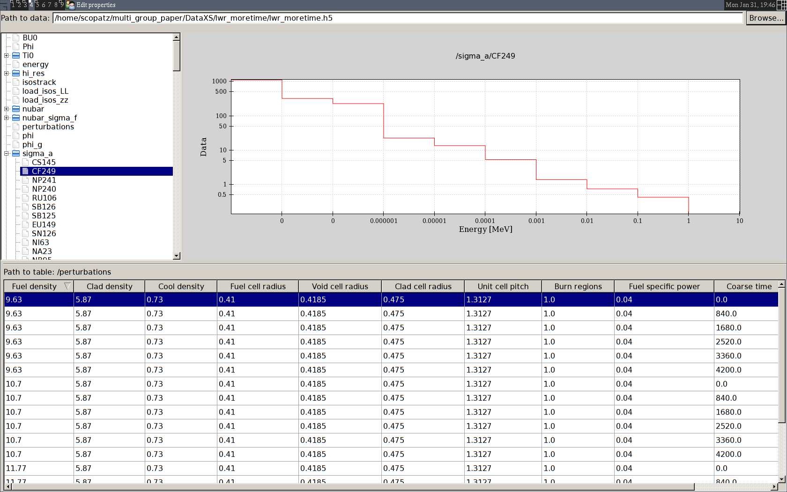

Char has a large number of runtime options that drive how it performs. You can obtain the following information by using the --help option:
Usage: char [options] confchar
Options:
-h, --help show this help message and exit
-v, --verbose Gives extra info while running.
-i, --input Makes the transport calculation input deck.
-r, --run Run the transport calculation.
-d, --dry-run Dry Run. Do NOT run the transport calculation.
-a, --analyze Run analysis on database.
-b, --burnup Run the burnup calculation.
-x, --xs Run the cross-section generation calculation.
-m, --delta-mass Run the initial isotope sensitivity calculation.
-N NPERT Perturbation indices to calculate, in Python slice syntax.
-I ISOS Isotopes to calculate.
-S NSENS Sensitivity indices to calculate, in Python slice syntax.
-c, --clean Cleans the reactor directory of current files.
-l, --local Run or Fetch files locally.
-s, --server Run or Fetch files from a remote server.
-f, --fetch Fetches files from the remote server. Does not run
transport, even if -r is set. Automatically sets -s.
-p, --pid Finds the process identification number of a current
transport run. Sets -d.
-k, --kill Kills the current transport run. Sets -p.
--cwd Run char in the current working directory.
--ui Launches the char ui.
-t, --test Tests an existing library for soundness.
The confchar argument is a path to a python file, typically called defchar.py that is used to specify required parameters of char. The reason that this appears as a runtime argument is because configuration files can be specified and stored up for different types of reactors, runs, or perturbations.
This option generates all of the initial input files that are required to perform any transport run. It initializes the {reactor}.h5 file, which is the cross-section database.
The run command encapsulates all of the logic on where to execute char (locally or on a server) and aggregates all of the run modes (burnup, cross-section generation, and isotopic sensitivity study) together in a single run command.
If the above run modes are give without the -r option, the transport will be run within this process rather than being subprocesses out appropriately.
On the other hand, the -d command will set up all required files to run, but skip the actual execution. This is most useful in debugging.
Execution typically produces a large number of files. These mostly come from serpent and other inputs that char uses and parses. However, if you are worried about a previous run interfering with the state of a new run, the clean command will remove all previously generated files and ensure a fresh start.
This command, along with -r, will run char and all of the serpent runs locally.
This command, along with -r, will run char and all of the serpent runs on a remote server machine. This server must have serpent and char and all of their dependencies installed as well. The remote server information must be specified in the confchar file.
This uses ssh and rsync on the backend, so an rsa key is highly recommended.
Char provides an easy way to fetch the files that were generated on a remote server via the -f option.
This option runs char in a burnup mode which calculates and stores the isotopic vectors for every burnup step, for every perturbation. This option is typically required before other kinds of calculation modes.
The main purpose of char is to calculate neutron cross-sections for various reactor situations. This determines whether every isotope in the isotopic tracking list is available in serpent or not. If it is, then serpent is used to generate cross sections of the reaction types specified. If the isotope is not available in the serpent library, then the physical models are used along with a high-resolution flux (calculated by serpent) to generate the cross-sections.
This run mode requires that the burnup calculation be run as well.
Char allows for the initial isotopic vector to be perturbed on a per-isotope basis. However, in general, perturbing all isotopes in not desirable because most isotopes do not have a significant impact on the reactivity of the core.
Still, for more complex reactors with a large number of input isotopics, determining which nuclides to perturb is not immediately apparent. For example, in an typical light water reactor, U-235 is the isotope to perturb. However, in a given fast reactor setup the answer is less obvious.
The -m option seeks to rectify this by performing a linear sensitivity study for all isotopes to the reactivity of the reactor for all perturbations. Results are displayed as if the -a analysis option were used.
This mode performs analysis for a previously calculated database.
Currently, only the isotopic sensitivity study has an associated analysis mode. Here for each isotope and for each perturbation, the standard deviation of the reactivity is calculated for each burn step. The maximum of standard deviation over all burn steps and perturbations is takes as the metric for each isotopes. The isotopes are then sorted by this metric. The higher the value the more likely this isotopes should be included as a perturbation parameter to the database. The maximal standard deviation for each isotope is printed to stdout.
Often times, the database does not come out quite as expected and select sub-sets need to be re-executed. Char provides a way to specific exactly which perturbation or sensitivity steps and which isotopes you wish to rerun at the command line.
The perturbation steps that you want to run are given via the -N NPERT option. NPERT can be any integer or standard python slice (i.e. 1:10). For example, if you wanted to run the last burnup step, or the first five cross-section perturbations you would run:
char -N -1 -b defchar.py
char -N 0:5 -x defchar.py
Next, suppose you know that there is a problem with a specific nuclide or set of nuclides. You may rerun just these species by providing a comma separated list of isotopes to the -I ISOS option. Isotopes in the ISOS list may be of any, mixed form. For example:
# Rerun cross-sections for Hydrogen-1
char -I H1 -x defchar.py
# Rerun cross-sections for some actinides
char -I U238,942390,AM242M,912370 -x defchar.py
Similar to perturbations, you can also choose to rerun slices of a sensitivity study using the -S NSENS option:
char -S -1 -m defchar.py
char -S 0:5 -m defchar.py
Finally, you are free to combine these options to have a rather specific path to the data you wish to recalculate:
# Oops, the first Hydrogen-1 point is messed up.
char -N 0 -I H1 -x defchar.py
This command find the process identity for a given run of char that has already been spawned. This command may work in conjunction with -l and -s for local and remote discovery.
Additionally, it prints out the time that the has been spent executing this command.
This command attempts to kill any currently executing char process. It may be run in conjunction with -l and -s for local and remote termination.
This command executes char within the current working directory, rather than creating a folder with the same name as the reactor and executing there. This option is primarily used in char’s internals, but may be useful for debugging.
Char comes packaged with a graphical user interface. Currently, this is used to inspect the database library and plot certain types of regular data.
The GUI is based of of the Enthought Tool Suite. Here is a screen shot, because people love those.
Once the database has been created, it is a good idea to test that its data is valid before using the file. To aid in this endeavor, you may use the test command to run suite of tests on the database itself. Unlike the other commands, you pass a path to the database in as char’s argument, rather than a defchar.py file. For example:
char -t /path/to/reactor.h5
Below are some common workflows that are used in to run char in various modes.
Initialize a reactor:
char -i -c defchar.py
Run a burnup & cross section calculation remotely:
# Run the reactor
char -irs -cbx defchar.py
# Poll the remote server
char -ps defchar.py
# After the calculation is complete, get the files
char -f defchar.py
Run an isotopic sensitivity study and analyze the results:
char -irl -cm defchar.py
char -a defchar.py
Start the user interface:
char --ui
Test the database file:
char --test /path/to/reactor.h5
Oops, the first Hydrogen-1 point is messed up. Fix locally:
char -N 0 -I H1 -x defchar.py
{kind=link}